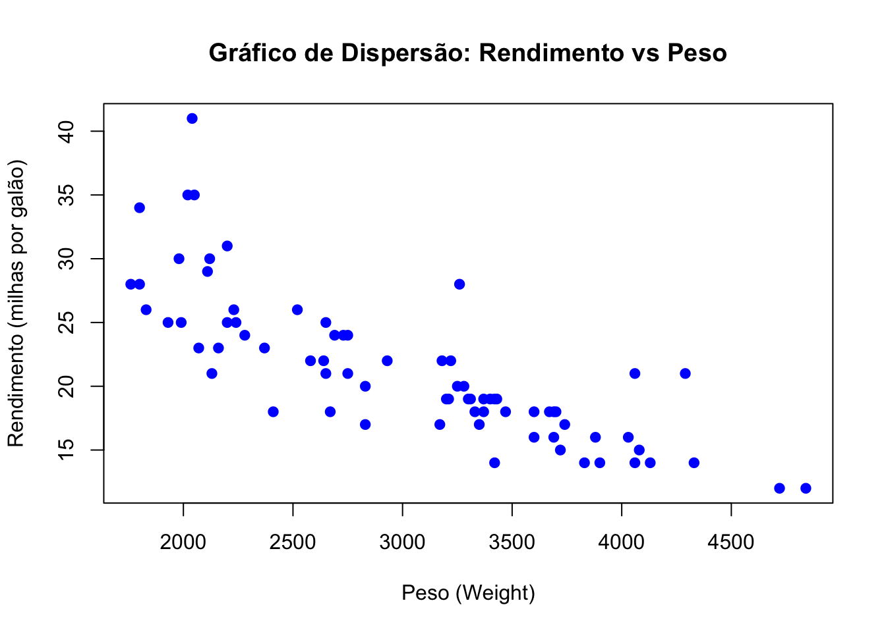
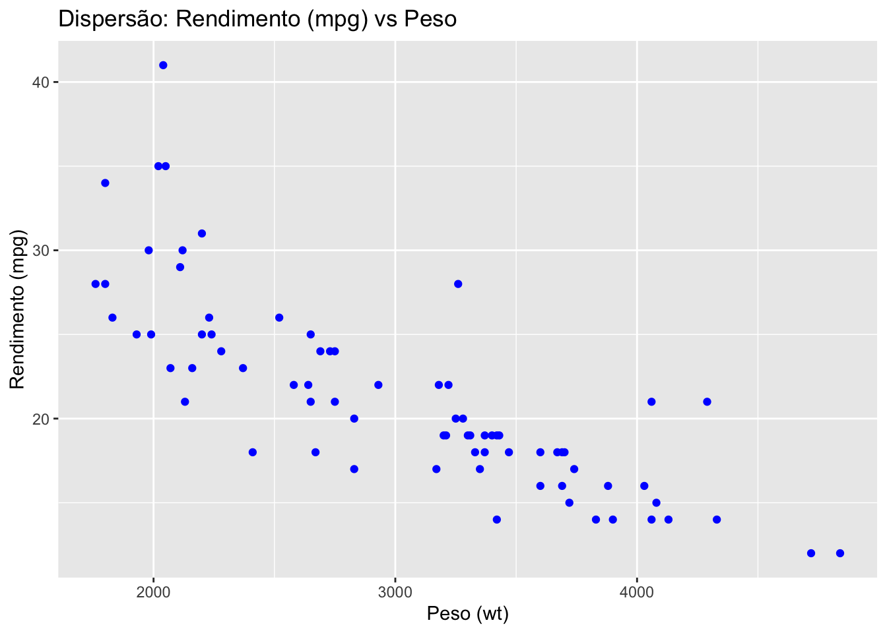
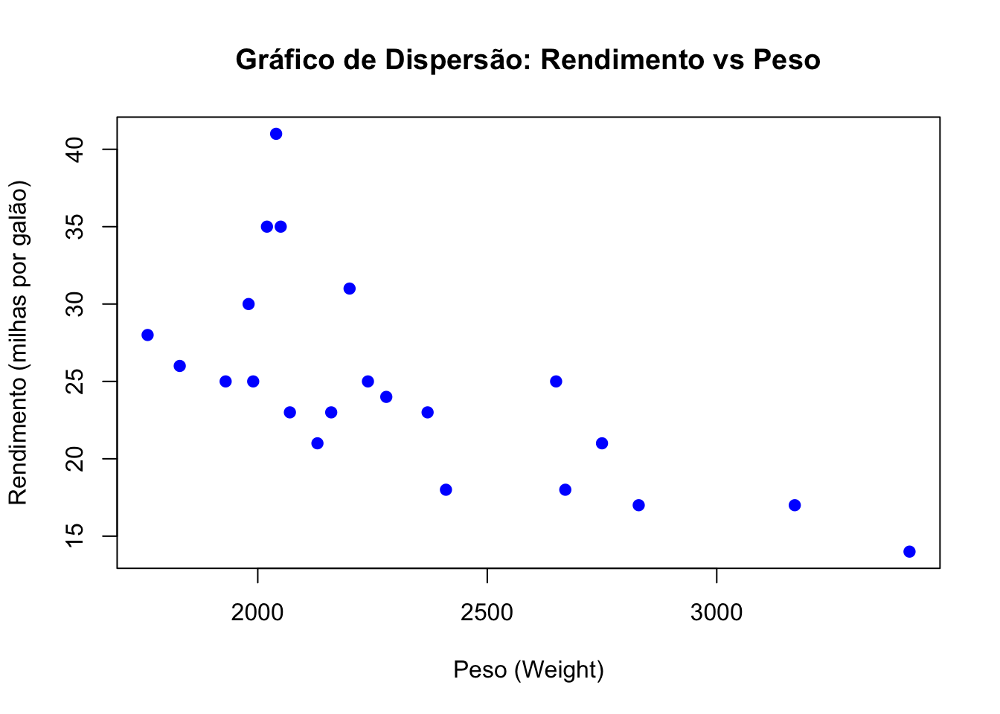
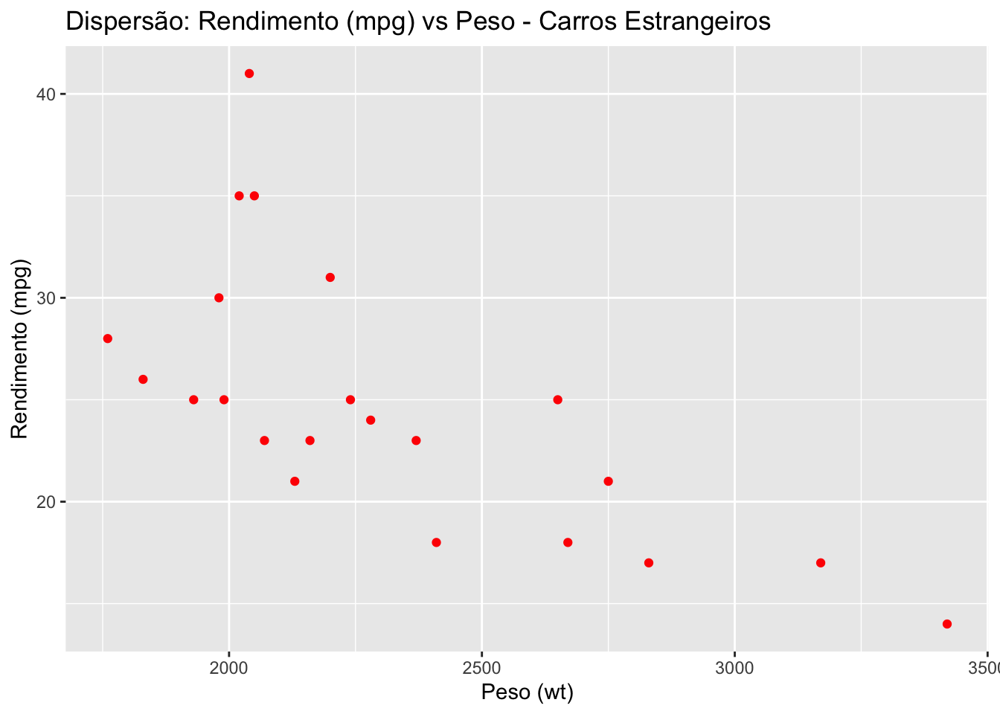

# Carrega o pacote "rio" para que suas funções estejam disponíveis para uso.
library(rio)
# Carrega o pacote "tidyverse" para usar suas funções de manipulação e visualização de dados.
library(tidyverse)
# Linha de código para importar a base de dados "auto.dta"
d <- import(file = '../dados/auto.dta')
# Código para mostrar as primeiras linhas da base de dados "d"
head(d)Exercício 1 — Introdução ao R (solução)
Entrega original: 17/10/2024.
1 Questão 1 - Análise da eficiência de combustível automotivo.
Responda às seguintes perguntas usando o conjunto de dados auto.dta no R.
Observação: a variável mpg (miles per gallon, milhas por galão) mede o rendimento do carro: quanto maior o valor, menos combustível o carro consome por distância.
1.1 a) Resuma as variáveis de preço, rendimento (mpg) e peso.
# Opção 1) R base
# 'summary' fornece um resumo estatístico básico das variáveis, incluindo mínimo, máximo e média.
summary(d$price) # Resumo da variável 'price' Min. 1st Qu. Median Mean 3rd Qu. Max.
3291 4220 5006 6165 6332 15906 summary(d$mpg) # Resumo da variável 'mpg' Min. 1st Qu. Median Mean 3rd Qu. Max.
12.00 18.00 20.00 21.30 24.75 41.00 summary(d$weight) # Resumo da variável 'weight' Min. 1st Qu. Median Mean 3rd Qu. Max.
1760 2250 3190 3019 3600 4840 # Opção 2) R base
# A função 'summary' é aplicada a um subconjunto do data frame 'd' contendo apenas as colunas de interesse.
summary(d[,c("price","mpg","weight")]) price mpg weight
Min. : 3291 Min. :12.00 Min. :1760
1st Qu.: 4220 1st Qu.:18.00 1st Qu.:2250
Median : 5006 Median :20.00 Median :3190
Mean : 6165 Mean :21.30 Mean :3019
3rd Qu.: 6332 3rd Qu.:24.75 3rd Qu.:3600
Max. :15906 Max. :41.00 Max. :4840 # Opção 3) tidyverse
# Usa o pipe '%>%' para encadear funções, calculando a média das variáveis 'price', 'mpg' e 'weight'.
d %>%
summarise(preco = mean(price),
rendimento_mpg = mean(mpg),
peso = mean(weight))1.2 b) Liste as cinco primeiras observações para as variáveis: marca, preço, rendimento (mpg), peso e origem (estrangeiro/doméstico).
# Opção 1) R base
# 'head' mostra as primeiras cinco linhas de um subconjunto do data frame 'd', selecionando as colunas especificadas.
head(d[,c("make","price","mpg","weight","foreign")],5)# Opção 2) Tidyverse
# Seleciona as colunas de interesse e exibe as cinco primeiras linhas utilizando o pipe '%>%'.
d %>%
select(make, price, mpg, weight, foreign) %>%
head(5)1.3 c) Quantas observações existem no total? Quantas são de carros domésticos e quantas de carros estrangeiros?
# Opção 1) R base
# 'nrow' retorna o número total de linhas (observações) no data frame 'd'.
nrow(d) # Para listar o número total de observações na base 'd'[1] 74# 'dim' retorna o número de linhas e colunas no data frame 'd'.
dim(d) # Para listar o número total de linhas e colunas na base 'd'[1] 74 12# 'sum' conta quantas observações têm 'foreign' igual a 1, ou seja, carros estrangeiros.
sum(d$foreign == 1) # Carros estrangeiros[1] 22sum(d$foreign == 0) # Carros domésticos[1] 52# 'table' conta as observações de cada categoria de uma vez
table(d$foreign)
0 1
52 22 # Opção 2) Tidyverse
# Agrupa os dados pela variável 'foreign' e conta o número de observações em cada grupo.
d %>%
group_by(foreign) %>%
count()1.4 d) Produza um gráfico de dispersão com rendimento (mpg) no eixo Y e peso no eixo X. Descreva a relação apresentada.
# Opção 1) R base - Gráfico de dispersão
# A função 'plot' cria um gráfico de dispersão com 'weight' no eixo X e 'mpg' no eixo Y.
plot(d$weight, d$mpg,
xlab = "Peso (Weight)", # Rótulo do eixo X
ylab = "Rendimento (milhas por galão)", # Rótulo do eixo Y
main = "Gráfico de Dispersão: Rendimento vs Peso", # Título do gráfico
pch = 19, # Forma dos pontos no gráfico
col = "blue") # Cor dos pontos no gráfico
# Opção 2) Tidyverse - Gráfico de dispersão
# Utiliza 'ggplot' para criar um gráfico de dispersão, definindo esteticamente os eixos.
ggplot(d, aes(x = weight, y = mpg)) +
geom_point(color = "blue") + # Adiciona os pontos ao gráfico com a cor azul
labs(title = "Dispersão: Rendimento (mpg) vs Peso", # Título do gráfico
x = "Peso (wt)", # Rótulo do eixo X
y = "Rendimento (mpg)") # Rótulo do eixo Y
Resposta: há uma relação negativa e forte entre peso e rendimento (correlação de cerca de −0,81): carros mais pesados percorrem menos milhas por galão, ou seja, consomem mais combustível. A relação parece ligeiramente curva: a queda do rendimento é mais acentuada entre os carros mais leves.
1.5 e) Repita o gráfico de dispersão, mas desta vez apenas para carros estrangeiros.
# Opção 1) R base - Gráfico de dispersão
# Cria um gráfico de dispersão apenas para os carros estrangeiros, filtrando os dados.
plot(d$weight[d$foreign == 1],
d$mpg[d$foreign == 1],
xlab = "Peso (Weight)", # Rótulo do eixo X
ylab = "Rendimento (milhas por galão)", # Rótulo do eixo Y
main = "Gráfico de Dispersão: Rendimento vs Peso", # Título do gráfico
pch = 19, # Forma dos pontos
col = "blue") # Cor dos pontos
# Opção 2) Tidyverse - Gráfico de dispersão - Gráfico de dispersão para carros estrangeiros
# Filtra os dados para incluir apenas carros estrangeiros e gera o gráfico de dispersão.
ggplot(d %>% dplyr::filter(foreign == 1),
aes(x = weight, y = mpg)) +
geom_point(color = "red") + # Adiciona os pontos ao gráfico com a cor vermelha
labs(title = "Dispersão: Rendimento (mpg) vs Peso - Carros Estrangeiros", # Título do gráfico
x = "Peso (wt)", # Rótulo do eixo X
y = "Rendimento (mpg)") # Rótulo do eixo Y
Resposta: entre os 22 carros estrangeiros, a relação também é negativa (correlação de cerca de −0,68), mas eles se concentram na faixa de peso mais baixa e têm, em média, rendimento maior do que os domésticos.